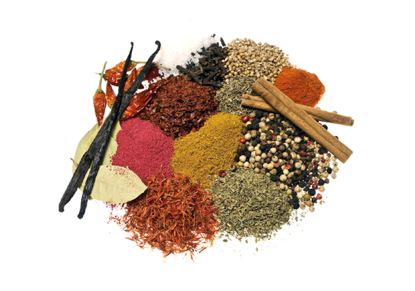
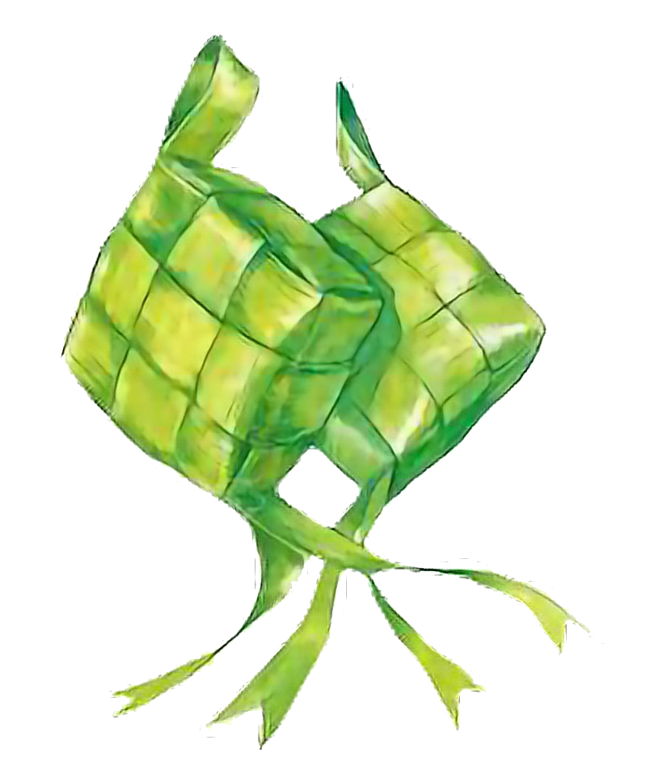

Basic
Indonesian and Malaysian cuisines are renowned for their rich tapestry of flavors, owing much of their distinctiveness to the abundant use of spices and herbs in daily meals.
These culinary traditions embrace a wide array of aromatic ingredients.
The robust combination of herbs and spices elevates each bite, offering a sensory experience that is both bold and nuanced.

These culinary traditions embrace a wide array of aromatic ingredients.
The robust combination of herbs and spices elevates each bite, offering a sensory experience that is both bold and nuanced.
Cendol
Cendol is an iced sweet dessert that contains droplets of green rice flour jelly, coconut milk and palm sugar syrup.
At its core, cendol is a traditional drink originating from Malaysia and Indonesia, but variations can be found throughout Southeast Asia.
Next to the green jelly, additional toppings might be added, including diced jackfruit, sweetened red azuki beans, or durian.
At its core, cendol is a traditional drink originating from Malaysia and Indonesia, but variations can be found throughout Southeast Asia.
Next to the green jelly, additional toppings might be added, including diced jackfruit, sweetened red azuki beans, or durian.
Curry
Southeast Asian curry and Japanese curry exhibit distinct characteristics that set them apart in terms of flavor and ingredients.
Japanese curry, influenced by British and Indian culinary traditions, often relies on a unique curry powder and is often thicker and heartier, creating a comforting and filling consistency.
In contrast, Southeast Asian curries showcase a vibrant array of spices, herbs, and aromatics, and tend to be more fluid with coconut milk frequently used as a base, imparting a creamy texture.
Japanese curry, influenced by British and Indian culinary traditions, often relies on a unique curry powder and is often thicker and heartier, creating a comforting and filling consistency.
In contrast, Southeast Asian curries showcase a vibrant array of spices, herbs, and aromatics, and tend to be more fluid with coconut milk frequently used as a base, imparting a creamy texture.

Ketupat
Ketupat, a traditional rice cake widely enjoyed in various Southeast Asian countries.
This iconic dish is made by weaving young coconut leaves into a diamond-shaped container, which is then filled with rice and boiled until it becomes a compact, glutinous mass.
The charm of ketupat lies not only in its unique shape but also in its role as a symbol of unity, prosperity, and celebration, particularly during festive occasions.

This iconic dish is made by weaving young coconut leaves into a diamond-shaped container, which is then filled with rice and boiled until it becomes a compact, glutinous mass.
The charm of ketupat lies not only in its unique shape but also in its role as a symbol of unity, prosperity, and celebration, particularly during festive occasions.
Air Sirup
Soda Gembira, also known as Air Sirup, is a delightful and effervescent beverage that embodies the essence of joy and refreshment in Indonesian and Malaysian culinary cultures.
Typically made by combining various colorful syrups, condensed milk, soda water, and crushed ice.
Soda Gembira is a visually captivating drink that reflects the exuberance of its name, which translates to "Happy Soda."
Typically made by combining various colorful syrups, condensed milk, soda water, and crushed ice.
Soda Gembira is a visually captivating drink that reflects the exuberance of its name, which translates to "Happy Soda."